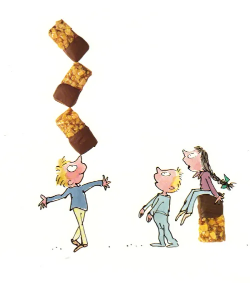

Homepage
Nutty Crunch Surprise

Curated by the famous Willy Wonka, these nutty, chocolatey treats are sure to delight anyone trying them
You will need
Kitchenware
- Pyrex bowl
- Small saucepan
- 8x10" Shallow pan
- Wax paper
Ingredients
-
- 200g Milk chocolate
- 55g Unalted butter
- 5 Tablespoons light corn syrup
- 80g almonds
- 6 Plain biscuits (Rich Tea work perfectly here)
- 30g Rice Kirspies
- Few drops vanilla extract
- 2 Tablespoons Water
- 100g Sugar
Recipe
- Put the semisweet chocolate, butter, and corn syrup in a Pyrex bowl and place in a saucepan of simmering water. Stir occasionally until melted. (Or place the bowl in a microwave oven and cook on high for about 1 ½ minutes)
- Add the almonds, crushed cookies, Rice Krispies, and vanilla extract and mix well.
- Spoon the mixture into a shallow pan lined with wax paper. Press the mixture down firmly with the back of a fork, creating a level surface.
- Refrigerate until cool, then cut into bars.
- Once the bars are ready, make the nutty crunch. Begin by placing the water and sugar in a small saucepan. Cook over low heat until the sugar has dissolved. Do not stir, but occasionally swirl the pan around gently. Once the sugar has dissolved, increase the heat and stir constantly until the sugar caramelizes and turns golden brown, about 2 to 3 minutes.
- Remove from the heat. Working quickly, add the chopped almonds, stir thoroughly, and dip one end of each bar in the mixture. Place the bars on a sheet of buttered wax paper to set.
- Melt the milk chocolate in a Pyrex bowl set in a saucepan of simmering water, or microwave as above. Once it has melted, remove from the heat and dip the other end of each bar in the chocolate.
- Let the bars cool on a sheet of wax paper.
- Enjoy!